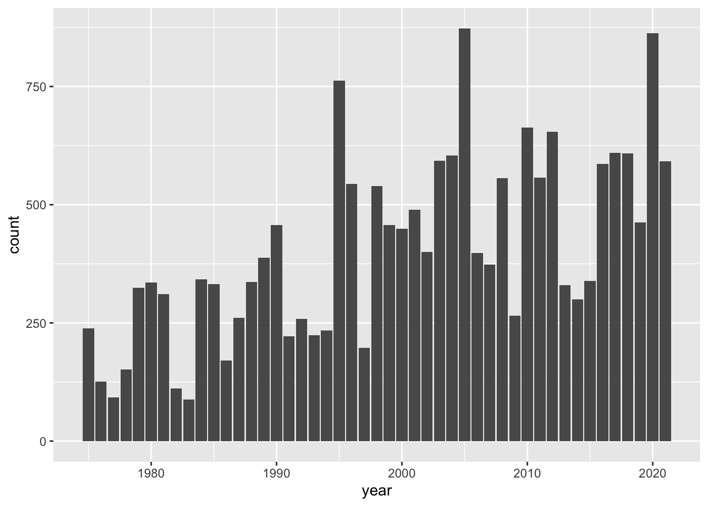

Let’s now talk about how to use "ggplot2" functions to obtain a data visualization of the above frequencies.
13.1 Barcharts
In chapter 4, we created a basic barchart of all year values. To be more precise, we obtained a barchart based on all the entries for each given year by invoking the command shown below:
# previously we got a barchart of year valuesggplot(data = storms) +geom_bar(aes(x = year))

As you can tell, the geometric object (geom) function that is used in this case is geom_bar(). This function, by default, does its own computation—via stat_count()—to get the counts or frequencies.
13.1.1 Barchart with geom_bar()
It feels very tempting and natural to use the same "ggplot2" functions of the preceding command in order to create a bar-plot for the number of tropical systems in each year. After all, this is exactly the type of chart we want to produce. So why not using geom_bar()? Let’s try this out.
# doesn't work as expectedggplot(data = system_counts_per_year) +geom_bar(aes(x = year))
Ooops!
What is going on with this graphic? Why do all bars have the same height? And why the y-axis has a count scale from 0 to 1? This doesn’t make any sense.
Well, the explanation has to do with the technical fact that, as we just said, by default geom_bar() does its own tally of year values.
Because the table system_counts_per_year already has the frequencies in column n, we need to tell geom_bar() to not count anything. This is done by adding a y argument to the aesthetic mapping function aes(), and also by setting the argument stat = "identity"
# this worksggplot(data = system_counts_per_year) +geom_bar(aes(x = year, y = n), stat ="identity")
13.1.2 Barchart with geom_col()
Often, there is more than one way to obtain a given output or a given graphic. Interestingly, in this case we can also get a barchart with the geom_col() function. This is a sibling function of geom_bar(stat = "identity"), designed to be used for tables of frequencies, like system_counts_per_year:
# another way to get a barchart, given a table of frequenciesggplot(data = system_counts_per_year) +geom_col(aes(x = year, y = n))
Looking at the chart, there are some fairly tall bars. Although it’s hard to see exactly which years have a considerably large number of tropical systems, eyeballing things out it seems that around 1995, 2005, and 2020 there are 20 or more storms. We can find the actual answer by using arrange(), specifying the counts to be shown in descending order—with desc():
As you can tell, in the 45-year period from 1975 to 2020, the top three years by number of systems correspond to 2020, 1995 and 2005.
13.2 Customizing a Barchart
For illustration purposes, let’s further customize the bar plot by adding a title, a more descriptive y-axis label, a simple background theme, and things like that. For instance, the function labs() can be used to customize a title, a subtitle, as well as axis labels. Likewise, the theme_minimal() function provides a simplified background theme that, in my opinion, gives a neat look to the graphic.
ggplot(data = system_counts_per_year) +geom_col(aes(x = year, y = n)) +labs(title ="Number of tropical systems per year",subtitle ="(1975-2020)",y ="count") +theme_minimal()
13.2.1 Global versus Local Aesthetic Mappings
An equivalent way to get the above plot can be obtained if we move the mapping aes() inside ggplot().
ggplot(data = system_counts_per_year, aes(x = year, y = n)) +geom_col() +labs(title ="Number of tropical systems per year",subtitle ="(1975-2020)",y ="count") +theme_minimal()
Relocating the mapping command aes() may seem a bit whimsical. What difference it makes if we place aes() inside ggplot() versus if we place it inside geom_col()? It turns out that there is an important difference. Any mapping done at the level of ggplot() is considered to be a global mapping in the sense that this cascades down to any additional layer, such as geom_col(). In contrast, any mapping done at the level of a geom_...() function or any other layer function acts as a local mapping, only affecting that particular type of geometric object.
To further illustrate the effect of aes(), let’s add a smoother to highlight the increasing trend that the number of storms have experienced in the visualized period of time. To do this, we add a new layer using stat_smooth() with arguments method = "loess" and se = FALSE
ggplot(data = system_counts_per_year, aes(x = year, y = n)) +geom_col(fill ="gray50") +stat_smooth(method ="loess", se =FALSE) +labs(title ="Number of tropical systems per year",subtitle ="(1975-2020)",y ="count") +theme_minimal()
The argument method = "loess" uses a non-linear smoother; in turn, se = FALSE prevents the standard error ribbon from being plotted. Observe also that the fill color of the bars has been changed to a less darker gray in order to better distinguish the blue smoother.
Compare the above command with the following one in which the aesthetic mapping aes(x = year, y = n) is done at the geom_col() level:
# errorggplot(data = system_counts_per_year) +geom_col(aes(x = year, y = n), fill ="gray50") +stat_smooth(method ="loess", se =FALSE) +labs(title ="Number of tropical systems per year",subtitle ="(1975-2020)",y ="count") +theme_minimal()
`geom_smooth()` using formula = 'y ~ x'
Error in `stat_smooth()`:
! Problem while computing stat.
ℹ Error occurred in the 2nd layer.
Caused by error in `compute_layer()`:
! `stat_smooth()` requires the following missing aesthetics: x and y
Oh no! Houston, we have a problem.
Every time you get an error message, do the following two things:
First, don’t panic,
Second, read the error message.
As you can tell, the error indicates that stat_smooth() requires missing aesthetics: x and y.
You may argue that those statistics, x and y, are already specified in aes(), inside geom_col(). And you are correct. But this is precisely the issue. Those aesthetics only work for geom_col(), not for stat_smooth(). One option to fix this problem is by including the same mapping into stat_smooth()
# fixing the errorggplot(data = system_counts_per_year) +geom_col(aes(x = year, y = n), fill ="gray50") +stat_smooth(aes(x = year, y = n), method ="loess", se =FALSE) +labs(title ="Number of tropical systems per year",subtitle ="(1975-2020)",y ="count") +theme_minimal()
While this fixes the problem, we’ve introduced unnecessary duplication into our code. Why? Because the mapping command aes(x = year, y = n) appears in two different places. A better option is to simply use one call to aes() at the top ggplot()level. In this form the mapping propagates to both geom_col() and stat_smooth()
# getting rid of the duplicated piece of codeggplot(data = system_counts_per_year, aes(x = year, y = n)) +geom_col(fill ="gray50") +stat_smooth(method ="loess", se =FALSE) +labs(title ="Number of tropical systems per year",subtitle ="(1975-2020)",y ="count") +theme_minimal()